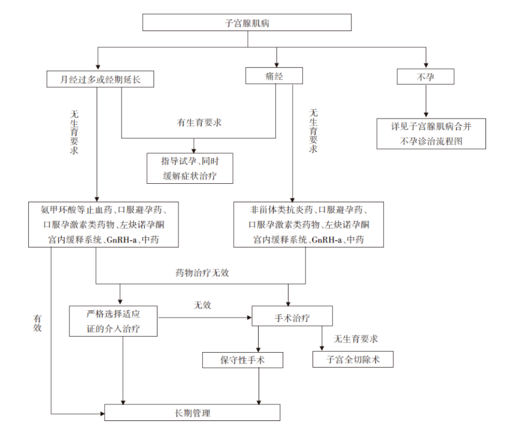

子宫肌瘤¶
定义¶
子宫肌瘤是子宫平滑肌组织增生而形成的良性肿瘤，是女性最常见的良性肿瘤。子宫肌瘤的发病率难以准确统计，估计育龄期妇女的患病率可达25%，根据尸体解剖统计的发病率可达50%以上。 1
分类¶
图1：国际妇产科联盟（FIGO）子宫肌瘤9型分类方法示意图
病因¶
高危因素¶
年龄>40岁、初潮年龄小、未生育、晚育、肥胖、多囊卵巢综合征、激素补充治疗、黑色人种及子宫肌瘤家族史等，这些因素均与子宫肌瘤的发病风险增加密切相关。
遗传易感性学说¶
研究表明，子宫肌瘤具有一定的遗传倾向2。
● 子宫肌瘤患者的女儿患病风险大；
● 同卵双胞胎女性同时发生子宫肌瘤的概率远高于异卵双胞胎；
● 子宫肌瘤与种族密切相关，黑色人种多发；
● 40%～50%患者存在染色体结构异常。
性激素学说¶
子宫肌瘤是性激素依赖性肿瘤，雌激素和孕激素在其发生发展中起重要作用。肌瘤在生育期生长迅速，而绝经后往往会萎缩3。
干细胞突变学说¶
分子生物学研究揭示，子宫肌瘤是由单克隆平滑肌细胞增殖形成，而单个肌瘤中的不同细胞均起源于单个母细胞，提示单个母细胞应具备全能干细胞的特性，子宫肌瘤可能是由单一干细胞的突变所致。
临床表现¶
症状¶
许多子宫肌瘤患者没有明显症状，尤其是在肌瘤较小的情况下。但当肌瘤增大或位置特殊时，可能引起以下症状：
-
月经改变：最常见的症状是月经量增多、经期延长或不规则出血。长期月经过多可能导致贫血。
-
盆腔疼痛：肌瘤可能引起盆腔疼痛、下腹坠胀或腰骶部酸痛。
-
压迫症状：较大的肌瘤可能压迫膀胱、直肠等邻近器官，导致尿频、尿急、便秘等症状。
-
不孕与流产：黏膜下肌瘤或较大的肌壁间肌瘤可能影响受精卵着床或胚胎发育，导致不孕或流产。
体征¶
● 表现为子宫增大，呈球形或不规则，或与子宫相连的肿块；
● 与肌瘤大小、部位及数目有关：0型有蒂黏膜下肌瘤可从子宫颈口脱出至阴道。浆膜下肌瘤查体容易误诊为卵巢实性肿物。
诊断¶
-
妇科检查：初步评估子宫的大小、形状和质地。
-
超声检查：是诊断子宫肌瘤最常用且有效的手段 。经腹或经阴道超声可以清晰显示肌瘤的大小、数量、位置及与周围器官的关系。
-
磁共振成像（MRI）：对于超声检查结果不明确或需要进一步评估肌瘤情况的患者，MRI可以提供更详细的信息 。MRI有助于鉴别肌瘤与其他盆腔肿块，并评估肌瘤的血供情况 。
-
其他检查：在某些情况下，医生可能会进行宫腔镜检查或诊断性刮宫，以排除子宫内膜病变。
治疗¶
期待治疗¶
● 适用于无症状或症状轻微、肌瘤较小且无明显增大趋势的患者；
● 定期复查，监测肌瘤的变化情况。
药物治疗¶
● 主要目的是缓解症状，控制肌瘤生长，为手术创造条件或作为围手术期辅助治疗。
● 药物治疗通常只能暂时控制症状，不能根治肌瘤。
● 常用药物包括：
促性腺激素释放激素激动剂（GnRH-a）：通过抑制卵巢功能，降低雌激素水平，使肌瘤缩小 。但长期使用可能引起骨质疏松等副作用，通常不建议长期使用。
选择性孕激素受体调节剂（SPRMs）：如米非司酮、醋酸乌利司他等，可以抑制肌瘤生长，减少出血 。
复方口服避孕药：可用于缓解月经过多等症状 。
Relugolix 联合疗法: Relugolix 联合疗法（40 毫克瑞卢戈利司、1 毫克雌二醇、0.5 毫克醋酸诺雷替尼）能显著改善与子宫肌瘤相关的月经过多出血[^4]。
手术治疗¶
● 适用于症状明显、药物治疗无效、肌瘤较大或怀疑恶变的患者。
● 子宫肌瘤切除术：保留子宫，切除肌瘤，适用于有生育要求的患者。手术方式包括开腹、腹腔镜和宫腔镜。
● 子宫切除术：切除整个子宫，适用于无生育要求或肌瘤症状严重、保守治疗无效的患者。手术方式包括开腹、腹腔镜和阴式子宫切除术。
● 子宫动脉栓塞术（UAE）：通过介入手段阻断子宫动脉血供，使肌瘤缺血坏死，从而缩小肌瘤，缓解症状。
● 射频消融术：利用射频能量破坏肌瘤组织，达到治疗目的。
● 磁波聚焦超声（HIFU）：利用高强度聚焦超声波，将能量聚集于肌瘤，使其发生凝固性坏死。
诊疗流程¶
 图2：诊疗流程
就医建议¶
定期体检：建议育龄期女性定期进行妇科检查，以便及早发现子宫肌瘤。
及时就医：如出现月经异常（如月经量增多、经期延长、不规则出血）、盆腔疼痛、腹部包块等症状，应及时就医，明确诊断。
咨询医生：对于已确诊子宫肌瘤的患者，应咨询医生，根据自身情况选择合适的治疗方案。
生育指导：计划怀孕的女性，如患有子宫肌瘤，应咨询医生是否需要进行治疗，以及治疗方式对生育的影响。
关注心理健康:社会和家庭支持对改善健康结果至关重要。